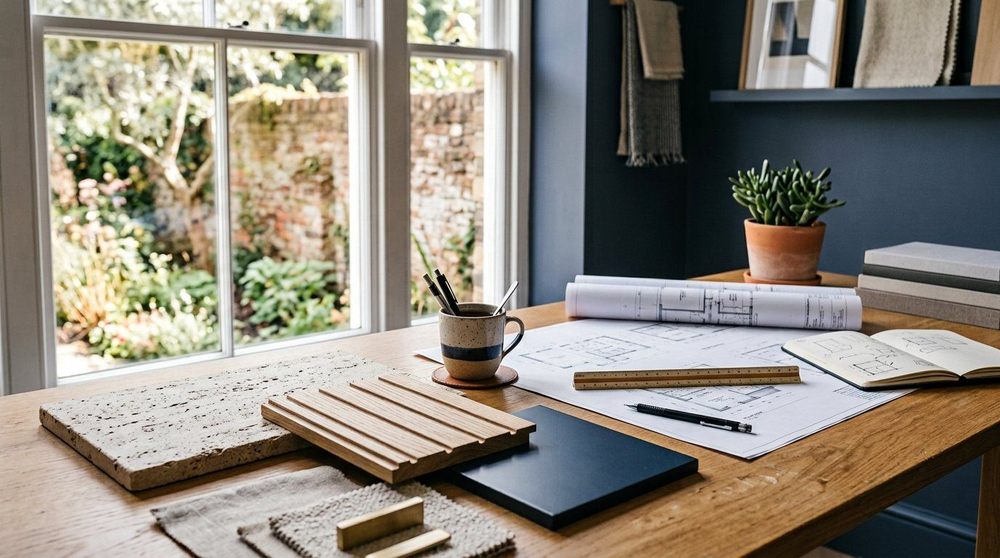
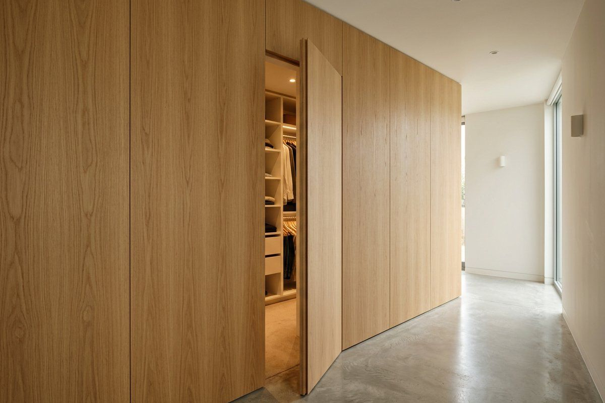
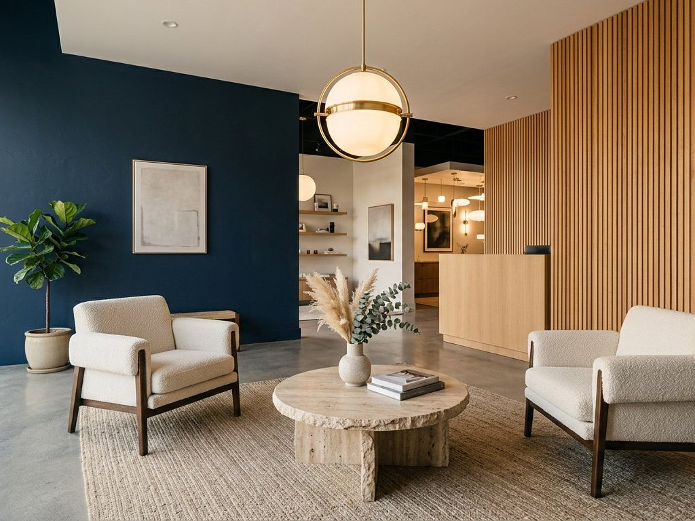
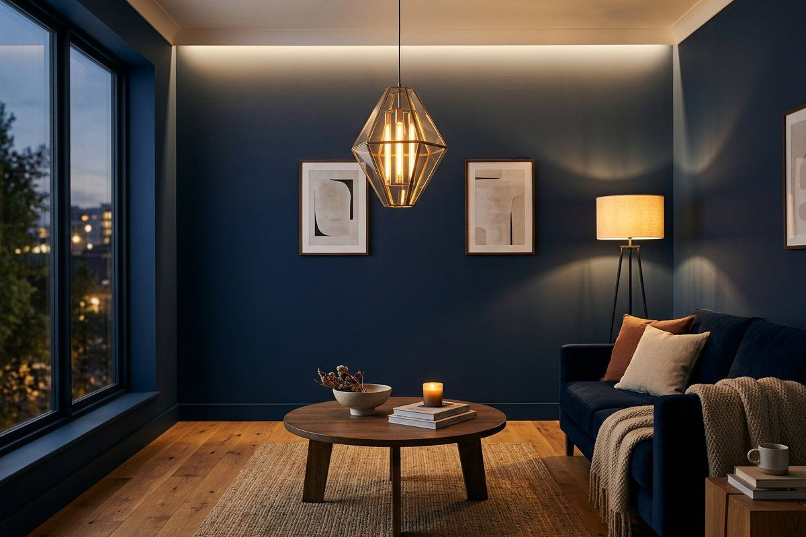
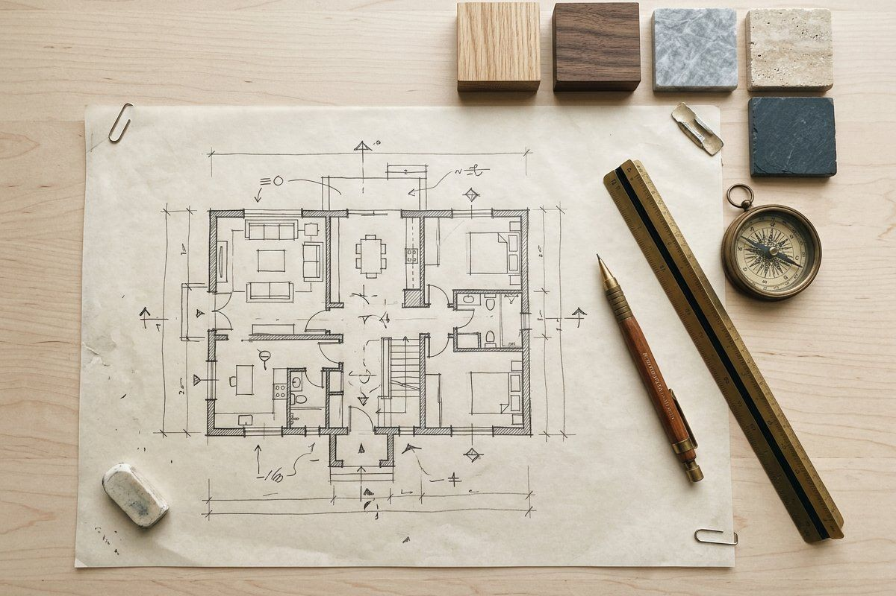
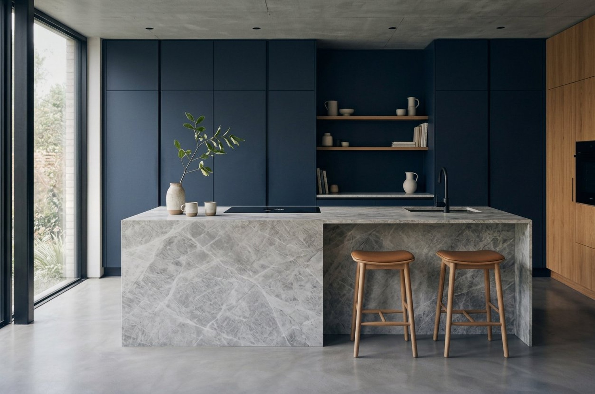

مجله لایکوLaico Journal
یادداشتهای ساختNotes on making
دربارهٔ متریال، نور، پلان و جزئیاتی که یک فضا را ماندگار میکنند.On materials, light, planning and the details that make a space last.
آخرین یادداشتLatest

متریال صادق یعنی چه؟What honest material means
سنگی که سنگ است، چوبی که چوب است، و لاکی که ادای سنگ را درنمیآورد.Stone that is stone, timber that is timber, and lacquer that does not pretend to be stone. ادامهٔ مطلبRead the articleهمهٔ یادداشتهاAll notes

درزهایی که نباید دیده شوندJoints that should not be seen
تلورانس زیر یک میلیمتر یک شعار نیست؛ یک عدد کارگاهی است.A tolerance under one millimetre is not a slogan. It is a workshop number. ادامهٔ مطلبRead the article
چرا بازدید شو روم اجباری استWhy the showroom visit is required
رنگ روی صفحه، رنگ در اتاق نیست. پالت باید لمس شود.Colour on a screen is not colour in a room. A palette has to be touched. ادامهٔ مطلبRead the article
نور، اولین متریال هر فضاLight, the first material of every room
نور فقط دیدن را ممکن نمیکند؛ حجم، رنگ و حالوهوای اتاق را میسازد.Light does not just make seeing possible; it builds the volume, colour and mood of a room. ادامهٔ مطلبRead the article
پلان پیش از رنگPlan before colour
رنگ آخرین تصمیم است؛ ساخت، اولین تعهد.Colour is the last decision; building is the first commitment. ادامهٔ مطلبRead the article